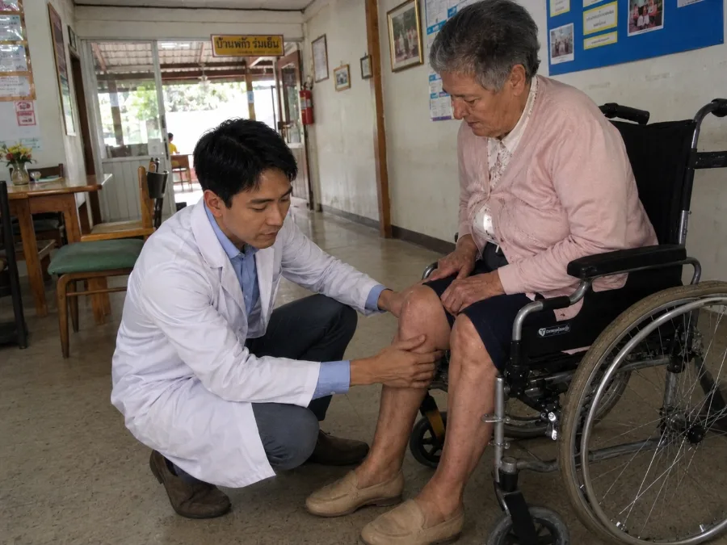
เช้าวันอังคารวันหนึ่ง เราเดินทางมาถึงหมู่บ้านเล็กๆ แห่งหนึ่งในจังหวัดศรีสะเกษ ถนนที่นำไปสู่บ้านพักคนชราเป็นถนนลูกรัง ผ่านบ้านเรือนรั้วเก่าๆ และสุนัขที่เห่าหอน „พวกคุณตามหาหมอหนุ่มใช่ไหม?" — แม่ค้าในหมู่บ้านถาม „เขามาทุกวันพฤหัสบดี ผู้เฒ่าผู้แก่รอเขาอยู่ที่ประตู บางคนถึงกับร้องไห้เมื่อเห็นเขา"
นี่คือครั้งแรกที่เราได้ยินเรื่องราวของ นพ. ธนวัฒน์ ศรีสุข — แพทย์วัย 30 ปี ผู้ลาออกจากตำแหน่งในคลินิกเอกชนแห่งหนึ่งในกรุงเทพฯ เพื่อทำในสิ่งที่ไม่มีแพทย์คนใดอยากทำ นั่นคือเดินทางจากบ้านพักคนชราแห่งหนึ่งสู่อีกแห่งหนึ่งทั่วประเทศไทย และรักษาผู้สูงอายุที่ถูกครอบครัวทอดทิ้ง
สาเหตุของการถูกทอดทิ้ง? เกือบจะเหมือนกันเสมอ คือ ผู้สูงอายุเดินไม่ได้อีกต่อไป เข่าของพวกเขาใช้การไม่ได้ กระดูกสันหลังคดงอ มือสั่นจนจับช้อนไม่ได้ และในวินาทีนั้น — วินาทีที่พวกเขาต้องการความช่วยเหลือมากที่สุด — ครอบครัวกลับตัดสินใจว่ามันมากเกินไป หนักเกินไป แพงเกินไป แล้วก็ส่งพวกเขาเข้าบ้านพักคนชรา
„ผมได้เห็นว่าการถูกลืมนั้นเป็นอย่างไร และผมตัดสินใจว่าจะไม่ยืนดูเฉยๆ" บทสัมภาษณ์พิเศษกับ นพ. ธนวัฒน์ ศรีสุข — แพทย์ผู้สละเงินเดือน 120,000 บาทต่อเดือน เพื่อช่วยเหลือคนที่ไม่มีใครเหลียวแล
นพ. ธนวัฒน์ ศรีสุข: „ครั้งแรกที่ผมก้าวเข้าไปในบ้านพักคนชราคือตอนอายุ 28 ปี ในฐานะอาสาสมัคร ผมไม่ได้เตรียมใจกับสิ่งที่ได้เห็น หญิงวัย 76 ปีคนหนึ่ง คุณยายมาลี นั่งอยู่ริมเตียง ขาและเข่าบวมจนงอไม่ได้ เธอไม่ได้ออกจากห้องมา 4 เดือนแล้ว เธอจับมือผมแล้วพูดว่า «คุณหมอคะ ลูกสาวพาฉันมาที่นี่ตอนที่ฉันลงบันไดไม่ได้แล้ว เธอบอกว่าดูแลฉันไม่ไหว นั่นมันสองปีมาแล้ว ตั้งแต่นั้นเธอก็ไม่เคยมาอีกเลย»
ในวินาทีนั้นผมเข้าใจว่าคนเหล่านี้คือคนที่ต้องการผมมากที่สุด — คนที่คนทั้งโลกลืมไปแล้ว เพียงเพราะพวกเขาเดินไม่ได้อีกต่อไป"
นพ. ธนวัฒน์ พูดอย่างสงบ แต่ด้วยความเข้มข้นที่ไม่อาจมองข้ามได้ สองปีแล้วที่เขาเดินทางจากบ้านพักคนชราแห่งหนึ่ง สู่อีกแห่งหนึ่งทั่วประเทศไทย — จากภาคเหนือจรดภาคใต้ จากภาคอีสานถึงภาคกลาง และทุกที่เขาพบภาพที่น่าตกใจแบบเดียวกัน คือผู้สูงอายุที่ข้อต่อเสื่อมพังโดยไม่ได้รับการรักษาที่แท้จริงใดๆ มีเพียงยาแก้อักเสบที่ทำลายกระเพาะและไตของพวกเขา
„คนเหล่านี้ส่วนใหญ่มาอยู่ที่นี่เพราะข้อต่อ เข่าใช้การไม่ได้ กระดูกสันหลังขยับไม่ได้ สะโพกสึกกร่อน และในวินาทีที่พวกเขาเดินเองไม่ได้อีกต่อไป ครอบครัวก็ตัดสินใจว่าพวกเขากลายเป็นภาระ คำที่ผมได้ยินบ่อยที่สุดในบ้านพักคนชราคือคำว่า «ภาระ» พวกเขาเรียกพ่อแม่ของตัวเองว่าภาระ"
„ยาแก้ข้ออักเสบไม่ได้แก้อะไรเลย — มันแค่กลบการพังทลายเอาไว้" นพ. ธนวัฒน์ อธิบายว่าทำไมการรักษาแบบเดิมจึงล้มเหลวทั้งในบ้านพักคนชราและในร้านขายยา
นพ. ธนวัฒน์ ศรีสุข:
— ผมพูดอย่างตรงไปตรงมา สิ่งที่ผมได้เห็นในบ้านพักคนชราเหล่านี้ทำให้ผมตกใจ คนอายุ 55-80 ปี ที่ได้รับยาแก้อักเสบชนิดเดิมๆ มาเป็นปีๆ — ยาที่กลบความปวดได้เพียงไม่กี่ชั่วโมงโดยไม่แก้ที่ต้นเหตุ กระดูกอ่อนของพวกเขาเสื่อมต่อไป น้ำหล่อเลี้ยงข้อหายไป ข้อต่อเสียดสีกันกระดูกชนกระดูก และสารเคมีในยาก็ทำลายกระเพาะ ตับ และไตของพวกเขาวันแล้ววันเล่า
นี่คือวงจรอุบาทว์ คือ ปวด → กินยา → ความปวดกลับมารุนแรงขึ้น → ยาแรงขึ้น → กระเพาะพัง → ยาเคลือบกระเพาะ → ไตวาย และไม่มีใครบอกความจริงกับพวกเขาว่า มีวิธีฟื้นฟูข้อต่อจากภายใน ไม่ใช่แค่ระงับความปวด
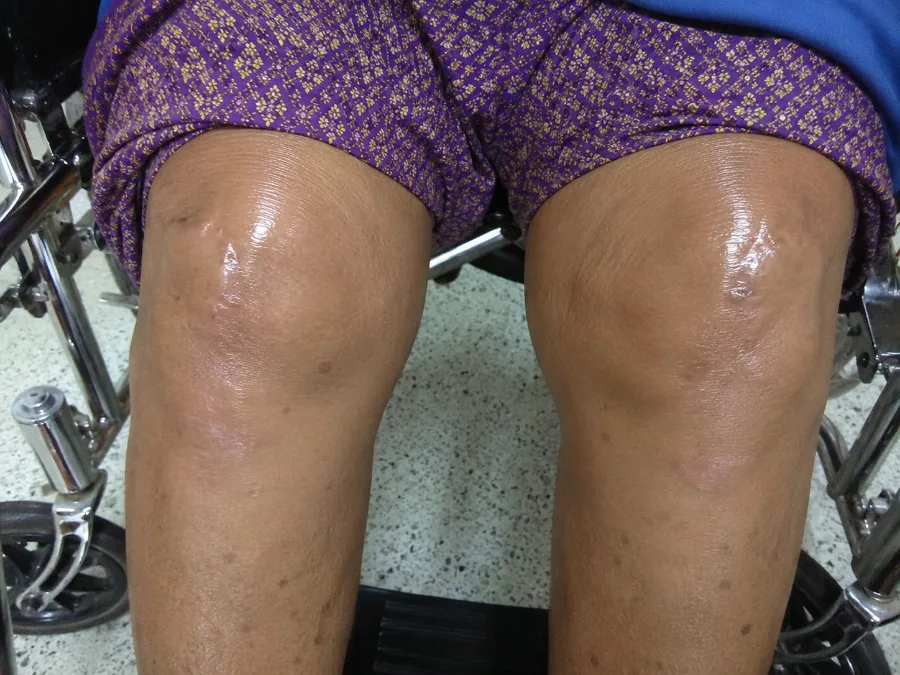
อาการปวดเข่า ปวดหลัง หรือปวดสะโพกหลังอายุ 45 ปี ไม่ใช่ „เรื่องปกติตามวัย" — แต่เป็นสัญญาณว่ากระดูกอ่อนในข้อกำลังเสื่อม
และน้ำหล่อเลี้ยงข้อกำลังหายไป
ยาแก้อักเสบเพียงแค่ปิดกั้นสัญญาณความปวด ในขณะที่การพังทลายดำเนินต่อไปอย่างเงียบๆ
หากไม่ฟื้นฟูกระดูกอ่อนอย่างแท้จริง ข้อต่อจะสึกจนหมด — และเมื่อนั้นทางเลือกเดียวคือรถเข็น
หรือการผ่าตัดเปลี่ยนข้อ
นพ. ธนวัฒน์ ศรีสุข:
— ผมขอให้ทุกท่านเข้าใจถึงความร้ายแรงของสถานการณ์ ผู้สูงอายุเหล่านี้ส่วนใหญ่มีกระดูกอ่อนที่เข่า กระดูกสันหลัง หรือสะโพกเสื่อมไปแล้ว 70-90% พวกเขาเดิน — ถ้ายังเดินได้ — ด้วยกระดูกที่เสียดสีกัน ทุกย่างก้าวคือการทรมาน ยาแบบเดิมไม่สามารถสร้างกระดูกอ่อนขึ้นใหม่ได้ — มันแค่กลบความปวดไว้จนกระทั่งทุกอย่างพังทลาย!
และสิ่งที่ทำให้ผมเจ็บปวดที่สุดคือ คนเหล่านี้ไม่มีใครเลย ครอบครัวทอดทิ้งพวกเขาไปในตอนที่ข้อต่อใช้การไม่ได้พอดี พวกเขาอยู่ตามลำพังบนเตียงในห้องเล็กๆ และรอคอย บางคนไม่รู้ด้วยซ้ำว่ากำลังรออะไร
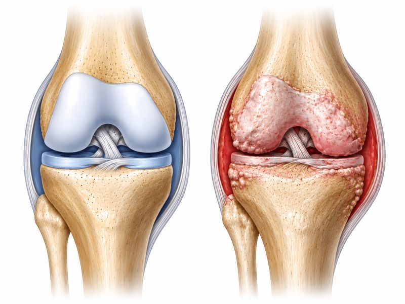
สิ่งสำคัญที่ต้องเน้นย้ำ: ใน 2 ใน 3 ของกรณี แม้จะกินยาแก้ปวดทุกวัน ข้อต่อก็ยังเสื่อมลงเรื่อยๆ เพราะต้นเหตุที่แท้จริง — การเสื่อมของกระดูกอ่อนและการหายไปของน้ำหล่อเลี้ยงข้อ — ยังไม่ได้รับการแก้ไข
หลังจากกินยาแก้อักเสบมาหลายปี ผู้ป่วยจำนวนมากไม่เพียงสูญเสียความสามารถในการเคลื่อนไหว แต่ยังสูญเสียกระเพาะ ตับ และไตด้วย แผลในกระเพาะ ตับวาย ไตบวม — นี่คือราคาที่ต้องจ่ายเมื่อไม่มีใครคิดจะเสนอทางเลือกที่แท้จริง
เรื่องราวที่เปลี่ยนชีวิตผม — และจะเปลี่ยนมุมมองที่คุณมีต่อความชราภาพ
นพ. ธนวัฒน์ ศรีสุข:
— ขอให้ผมเล่าให้ฟังว่าผมเห็นอะไรในแต่ละสัปดาห์ ไม่ใช่ตัวเลข ไม่ใช่สถิติ แต่เป็นผู้คน ผู้คนที่มีชื่อ มีเรื่องราว มีลูกหลานที่ไม่มาหาอีกแล้ว
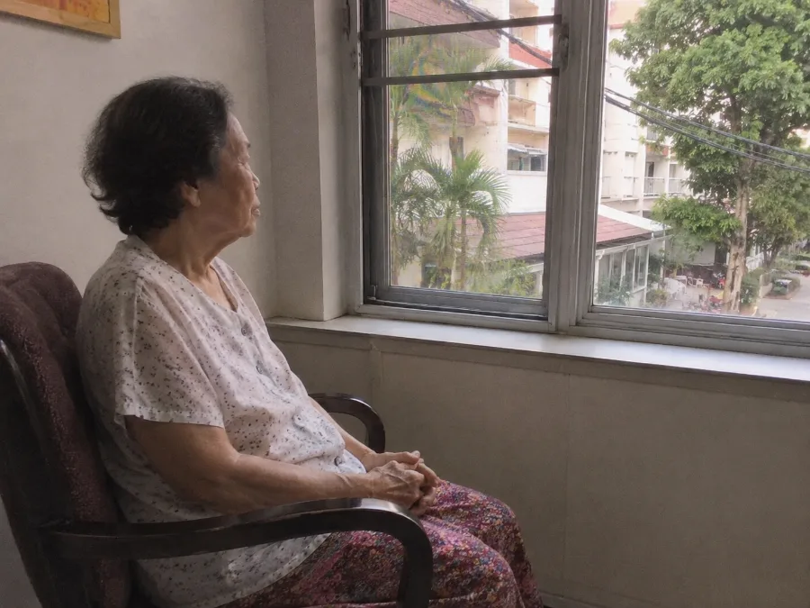
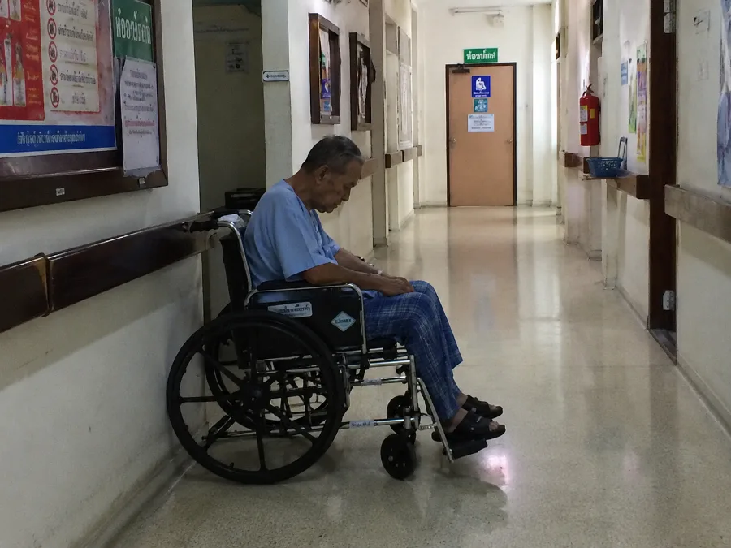
นี่คืออาการที่ผมพบบ่อยที่สุดในบ้านพักคนชรา — และเป็นอาการที่คนนับล้านในประเทศไทยมองข้าม:
- ปวดเข่าอย่างรุนแรงเวลาขึ้นลงบันได — หรือทุกการเคลื่อนไหว;
- อาการแข็งเกร็งตอนเช้า — ความรู้สึกเหมือน „ขาท่อนไม้" ร่างกายขยับไม่ได้ 30-60 นาทีหลังตื่นนอน;
- ปวดหลังเรื้อรัง — ก้มตัวไม่ได้ ลุกจากเตียงไม่ได้;
- เข่า ข้อเท้า หรือนิ้วบวม;
- เสียงดังก๊อบแก๊บในข้อต่อทุกการเคลื่อนไหว;
- ปวดสะโพกร้าวลงต้นขา — เดินได้ไม่เกิน 50 เมตร;
- นิ้วมือผิดรูปเป็นปุ่มปม — หยิบจับสิ่งของไม่ได้;
- อาการชาที่ขาหรือมือ — สัญญาณของหมอนรองกระดูกเคลื่อนหรือปัญหาเส้นประสาท;
- ความรู้สึกเหมือน „มีดแทง" ที่เอวเวลาลุกขึ้นยืน;
- กระดูกสันหลังคด หลังค่อม — ภาวะหลังค่อมที่ลุกลาม;
- ปวดตอนกลางคืนจนนอนไม่หลับ — ตื่น 4-5 ครั้งต่อคืน;
อาการแต่ละอย่างเหล่านี้คือสัญญาณเตือน หลังอายุ 45-50 ปี การเพิกเฉยต่ออาการเหล่านี้นำไปสู่จุดจบเพียงอย่างเดียว: การเคลื่อนไหวไม่ได้โดยสิ้นเชิง รถเข็น การต้องพึ่งพาผู้อื่นอย่างสมบูรณ์ — และในหลายกรณีคือบ้านพักคนชรา
ทุกวันที่ปล่อยข้อต่อไว้โดยไม่รักษา ยิ่งใกล้กับการเคลื่อนไหวไม่ได้อย่างถาวร! ผู้สูงอายุหลายพันคนในบ้านพักคนชรามาอยู่ที่นั่นเพราะเพิกเฉยต่อความปวด — หรือกินแค่ยาที่ไม่ได้แก้ที่ต้นเหตุ ลงมือทำตอนนี้ — เพื่อตัวคุณเองหรือเพื่อคนที่คุณรัก — ก่อนที่จะสายเกินไป!
„ผมตัดสินใจว่าต้องมีวิธีฟื้นฟูข้อต่อ — ไม่ใช่แค่ระงับความปวด" แพทย์วัย 30 ปีโน้มน้าวศูนย์วิจัยให้พัฒนาสิ่งที่อุตสาหกรรมยาปฏิเสธได้อย่างไร
นพ. ธนวัฒน์ ศรีสุข:
— หลังจากออกเยี่ยมบ้านพักคนชรามาหนึ่งปี ผมตระหนักถึงความจริงอันเจ็บปวด คือยาแก้อักเสบจะไม่ช่วยชีวิตใครได้เลย ยาเหล่านี้เพียงแค่ปิดเสียงสัญญาณเตือนของร่างกาย ในขณะที่ข้อต่อยังคงเสื่อมต่อไป ผมต้องการสิ่งที่ต่างออกไปอย่างสิ้นเชิง คือวิธีที่ฟื้นฟูกระดูกอ่อนจากภายใน ฟื้นฟูน้ำหล่อเลี้ยงข้อ และหยุดการอักเสบในระดับเซลล์
ผมติดต่อศูนย์วิจัยแห่งหนึ่งที่ผมเคยร่วมงานด้วยสมัยเรียนมหาวิทยาลัย ผมนำเสนอกรณีต่างๆ ภาพถ่าย และผลตรวจของผู้ป่วยในบ้านพักคนชราให้พวกเขาดู ผมพานักวิจัยไปที่บ้านพักคนชราด้วยตัวเอง — เพื่อให้พวกเขาเห็นกับตาว่าเกิดอะไรขึ้นที่นั่น พวกเขาตกตะลึง
เราทำงานร่วมกันนานกว่า 10 เดือน ทดสอบสูตรมากกว่า 180 สูตร และในที่สุดเราก็พบสูตรที่แม่นยำ — แคปซูลที่เมื่อรับประทานเข้าไป สารออกฤทธิ์จะถูกดูดซึมเข้าสู่กระแสเลือดและส่งตรงไปยังข้อต่อที่เสียหายในระดับเซลล์ กระตุ้นการฟื้นฟูกระดูกอ่อนตามธรรมชาติ ไม่ใช่ยาแก้ปวดที่เพียงกลบอาการและทำลายกระเพาะกับตับ — แต่เป็นแคปซูลที่มีสูตรพิเศษซึ่งบำรุงข้อต่อจากภายในโดยตรง
สูตรของ นพ. ธนวัฒน์ ประกอบด้วยสารออกฤทธิ์ดังต่อไปนี้:
- อาร์นิกา มอนทานา (อาร์นิกาภูเขา) สารต้านการอักเสบและบรรเทาปวดจากธรรมชาติ ออกฤทธิ์แรง
- เมนทอล สารบรรเทาปวดและให้ความรู้สึกเย็นจากธรรมชาติ: บรรเทาความปวดได้ทันที
- ฮาร์ปาโกไฟตัม โพรคัมเบนส์ (กรงเล็บปีศาจ) สารสกัดจากราก: ต้านการอักเสบและฟื้นฟูข้อต่ออย่างทรงพลัง
- โรบิเนีย ซูโดอะคาเซีย (อะคาเซียขาว) สารสกัดจากดอก: ช่วยให้สงบ ลดบวม และฟื้นฟู
- บอสเวลเลีย เซอร์ราตา (กำยานอินเดีย) สารสกัดจากยาง: กรดบอสเวลลิกเข้มข้นที่ยับยั้งการอักเสบ
ส่วนผสมเหล่านี้หาได้ยากในความเข้มข้นที่ต้องการ การผสมในสัดส่วนที่เหมาะสมต้องใช้เทคโนโลยีพิเศษ — หากสัดส่วนคลาดเคลื่อนเพียง 0.1% สารออกฤทธิ์ก็จะดูดซึมได้ไม่ลึกพอ และไม่สามารถกระตุ้นการฟื้นฟูกระดูกอ่อนได้
นี่คือกำเนิดของ Calcevit — แคปซูลชนิดเดียวที่บรรจุสารออกฤทธิ์ทั้งหมดนี้ในสัดส่วนที่สมบูรณ์แบบ เพื่อการฟื้นฟูข้อต่ออย่างครบวงจร
นพ. ธนวัฒน์ ศรีสุข:
— เราร่วมกับศูนย์วิจัยจนผลิตผลิตภัณฑ์นี้สำเร็จ คือแคปซูลสำหรับรับประทาน ที่ออกฤทธิ์ต่อข้อต่อที่เป็นปัญหาทุกจุด — เข่า กระดูกสันหลัง สะโพก มือ คอ ชื่อว่า Calcevit รับประทานวันละสองครั้ง เช้าและเย็น พร้อมน้ำหนึ่งแก้ว สารออกฤทธิ์จะถูกดูดซึมเข้าสู่กระแสเลือดและส่งตรงไปยังข้อต่อ ด้วยสูตรพิเศษที่อ่อนโยนต่อกระเพาะ — จึงปราศจากผลข้างเคียงของยาแก้ปวดทั่วไป

ความลับอยู่ที่ „เทคโนโลยีการดูดซึมล้ำลึก" ที่เราพัฒนาขึ้นในห้องแล็บร่วมกับทีมงาน วิธีนี้ช่วยให้สารออกฤทธิ์เข้าถึงเยื่อหุ้มข้อโดยตรง — จุดที่กระดูกอ่อนกำลังเสื่อม — ด้วยประสิทธิภาพมากกว่าผลิตภัณฑ์เสริมอาหารทั่วไปในท้องตลาดถึง 5 เท่า
„Calcevit" ไม่เหมือนใคร ส่วนผสมทุกชนิด — ในความเข้มข้นที่แม่นยำ — กระตุ้นการฟื้นฟูกระดูกอ่อน ฟื้นฟูน้ำหล่อเลี้ยงข้อ และหยุดการอักเสบ นี่คือแคปซูลชนิดเดียวที่ออกฤทธิ์ในระดับเซลล์ ส่งสารออกฤทธิ์ไปยังบริเวณที่เป็นปัญหาโดยตรง — เข่า กระดูกสันหลัง สะโพก มือ คอ — โดยปราศจากผลข้างเคียงที่เป็นอันตรายของยาแก้อักเสบ สิ่งที่สำคัญที่สุดคือ มันได้ผลแม้กระทั่งกับคนอายุ 70, 80, 85 ปี ผมทดสอบครั้งแรกกับผู้ป่วยในบ้านพักคนชรา — คนที่ไม่มีใครรักษาอีกแล้ว
นพ. ธนวัฒน์ ศรีสุข:
— ผู้ป่วยกลุ่มแรกคือผู้สูงอายุที่ถูกทอดทิ้งในบ้านพักคนชรา ผมให้พวกเขารับประทานแคปซูล Calcevit วันละสองครั้ง สำหรับเข่าที่บวม กระดูกสันหลัง และสะโพก แล้วก็รอ ในวันที่สาม — คุณยายประนอม ที่ไม่ได้ลุกจากเตียงมา 4 เดือน ก้าวเดินด้วยตัวเองได้เป็นครั้งแรก เราทั้งคู่ร้องไห้
4 กลไกที่ Calcevit ใช้ฟื้นฟูข้อต่อและคืนความสามารถในการเคลื่อนไหว — ในทุกช่วงวัย
4 ผลลัพธ์หลักของแคปซูล „Calcevit":
- ขจัดความปวดและการอักเสบ: ภายใน 15-30 นาทีแรกหลังรับประทาน สารประกอบของอาร์นิกาภูเขา กำยาน และเมนทอล จะขจัดความปวดและลดการอักเสบ ไม่ใช่ด้วยการปิดกั้นสัญญาณประสาท (เหมือนยาแก้ปวด) — แต่ด้วยการหยุดกระบวนการอักเสบที่ต้นตอ
- ฟื้นฟูกระดูกอ่อนในข้อต่อ: สารสกัดจากกรงเล็บปีศาจและกำยานจะเข้าสู่เยื่อหุ้มข้อและกระตุ้นการทำงานของเซลล์กระดูกอ่อน (คอนโดรไซต์) ส่งเสริมการสร้างเนื้อเยื่อกระดูกอ่อนใหม่ กระบวนการนี้จะเริ่มขึ้นหลังใช้อย่างสม่ำเสมอ 3-5 วัน
- ฟื้นฟูน้ำหล่อเลี้ยงข้อ: สารออกฤทธิ์ถูกดูดซึมเข้าสู่กระแสเลือดและฟื้นฟูน้ำหล่อเลี้ยงข้อ — „สารหล่อลื่น" ตามธรรมชาติของข้อต่อ ด้วยเหตุนี้กระดูกจึงไม่เสียดสีกันอีกต่อไป และการเคลื่อนไหวก็กลับมาราบรื่นและปราศจากความปวดอีกครั้ง
- ปกป้องและป้องกันในระยะยาว: สารสกัดจากอะคาเซียและสารประกอบแร่ธาตุช่วยเสริมความแข็งแรงให้เอ็นและเส้นเอ็นรอบข้อต่อ ป้องกันความเสียหายในอนาคต หลังใช้ 30-60 วัน ข้อต่อจะได้รับการปกป้องอย่างมั่นคงที่คงอยู่นานหลายเดือน
„ผมทดสอบ Calcevit ครั้งแรกกับผู้ป่วยในบ้านพักคนชรา — ผลลัพธ์เหนือกว่าทุกสิ่งที่ผมเคยเห็นในการทำงาน 6 ปี" ทดสอบกับผู้คน 2,340 คน อายุตั้งแต่ 45-86 ปี
นพ. ธนวัฒน์ ศรีสุข:
— ผู้ป่วยกลุ่มแรกคือผู้สูงอายุที่ถูกทอดทิ้งในบ้านพักคนชรา คนที่ไม่มีใครรักษาอีกแล้ว ผลลัพธ์น่าทึ่งมากจนศูนย์วิจัยขยายการทดสอบไปยังกลุ่มคนกว่า 2,300 คนจากทั่วประเทศไทย — ครอบคลุมปัญหาข้อต่อทุกประเภท: เข่า กระดูกสันหลัง สะโพก มือ คอ
ผมเห็นคนอายุ 80 ปีที่เดินไม่ได้ — แล้ว 6 สัปดาห์ต่อมาก็เดินออกไปที่ลานบ้านพักคนชราได้ด้วยตัวเอง พยาบาลร้องไห้ ผมก็ร้องไห้ไปกับพวกเขา
ผลการทดสอบ „Calcevit" — กลุ่มควบคุม: 2,340 คน อายุ 45-86 ปี
| ขจัดอาการปวดเข่าได้อย่างสมบูรณ์ | 96,2% |
| ขจัดอาการปวดหลังและอาการแข็งเกร็งตอนเช้า | 94,7% |
| ข้อเสื่อมระยะที่ 1-2 (กลับมาเคลื่อนไหวได้เต็มที่) | 98,1% |
| ข้อเสื่อมระยะที่ 3 (ดีขึ้นอย่างเห็นได้ชัด) | 87,3% |
| ข้อสะโพกเสื่อม (ปวดสะโพก) | 91,5% |
| หมอนรองกระดูกเคลื่อน (ลดอาการปวดและชา) | 89,4% |
| ข้ออักเสบรูมาตอยด์ (นิ้วมือ) | 93,8% |
| กลับมาเคลื่อนไหวข้อต่อได้เต็มที่ | 95,6% |
| ขจัดอาการบวมและตะคริวกลางคืน | 97,0% |
| ความสามารถในการเดินโดยไม่ต้องพึ่งใคร | 94,3% |
เรื่องราวที่ทำให้หัวใจผมแตกสลาย — และมอบความหวังที่ยิ่งใหญ่ที่สุด คุณยายมาลี วัย 84 ปี ถูกทอดทิ้งในบ้านพักคนชราเมื่อเข่าใช้การไม่ได้ หลังใช้ Calcevit 2 เดือน — เดินออกไปที่สวนได้ด้วยตัวเอง เป็นครั้งแรกในรอบ 3 ปี
คุณยายมาลีเป็นผู้ป่วยคนแรกของ นพ. ธนวัฒน์ ในบ้านพักคนชราที่จังหวัดบุรีรัมย์ ด้วยวัย 84 ปี ข้อเข่าเสื่อมระยะที่ 3 ทั้งสองข้างและข้อสะโพกซ้ายเสื่อม เธอเดินไม่ได้มา 14 เดือน ลูกชายพาเธอมาส่งเพราะ „อุ้มเธอเข้าห้องน้ำไม่ไหว" และไม่ได้มาเยี่ยมเธอเลยมา 2 ปี
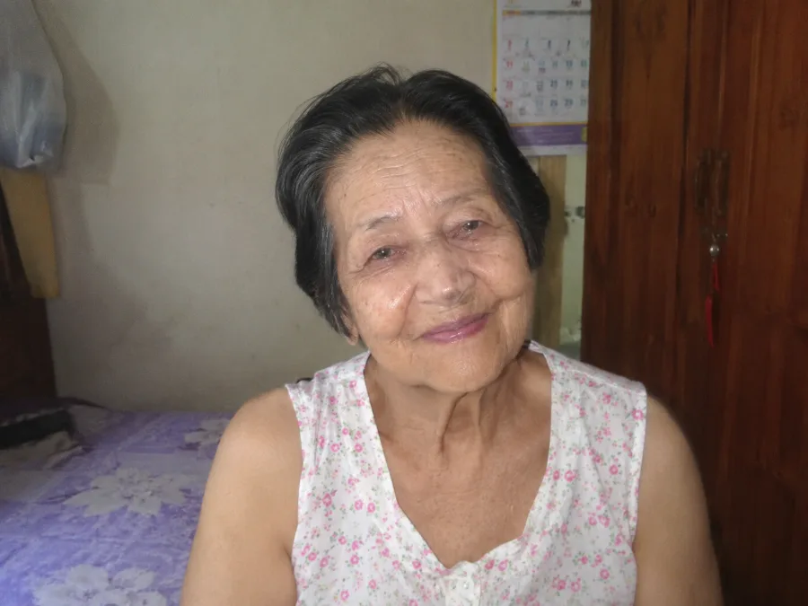
„ฉันไม่เคยคิดว่าจะกลับมาเดินได้อีก เข่าของฉันบวมจนงอไม่ได้ พวกเขาเข็นฉันไปมาในห้องด้วยรถเข็น ตอนเช้าฉันตื่นขึ้นมา และเป็นชั่วโมงกว่าจะขยับแม้แต่นิ้วได้ ราวกับว่าร่างกายของฉันตายไปแล้ว แต่ฉันยังมีชีวิตอยู่
ลูกชายพาฉันมาที่นี่เพราะยกฉันขึ้นจากเตียงไม่ไหว เขาพูดว่า «แม่ ผมจะมาเยี่ยมทุกวันอาทิตย์» สองปีแล้วที่เขาไม่เคยมา ฉันไม่โทษเขา — เขามีชีวิตของเขา แต่ในยามค่ำคืน เมื่อความปวดปลุกฉันตื่นและไม่มีใครอยู่ข้างๆ… มันยากจริงๆ
แล้ว นพ. ธนวัฒน์ ก็มา เขาเป็นคนแรกที่จับเข่าของฉันโดยไม่รังเกียจ เขาอธิบายว่าเกิดอะไรขึ้นในข้อต่อ แล้วก็ให้ฉันรับประทานแคปซูล หนึ่งสัปดาห์ต่อมาฉันงอเข่าซ้ายได้ หนึ่งเดือนต่อมาฉันลุกจากเตียงเองได้ สองเดือนต่อมา — ฉันเดินออกไปที่สวนได้ ฉันไม่ได้ออกไปข้างนอกมา 3 ปีแล้ว
พยาบาลร้องไห้เมื่อเห็นฉัน ฉันร้องหนักกว่า ไม่ใช่เพราะฉันเดินได้ แต่เพราะมีใครบางคน — หมอหนุ่มที่ฉันไม่เคยรู้จัก — ให้ฉันมากกว่าที่ลูกชายของฉันเองเคยให้"
คุณยายมาลี วัย 84 ปี บ้านพักคนชราในจังหวัดบุรีรัมย์อีกกรณีหนึ่ง: คุณสมบัติ วัย 58 ปี เป็นกรรมกรก่อสร้างมาทั้งชีวิต กระดูกสันหลังพังเพราะหมอนรองกระดูกเคลื่อน ภรรยาทิ้งเขาไปเมื่อเขาทำงานไม่ได้อีกต่อไป
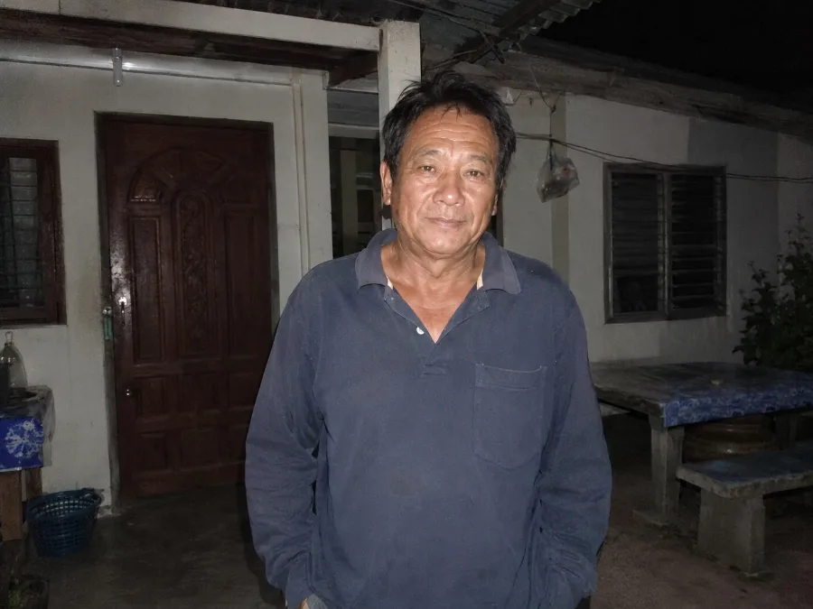
„ผมเป็นช่างก่ออิฐมา 30 ปี กระดูกสันหลังของผมใช้การไม่ได้ตอนอายุ 54 — หมอนรองกระดูกเคลื่อนสองข้อและปวดร้าวลงขา ผมยืนก็ไม่ได้ นอนก็ไม่ได้ เจ็บไปหมดทุกอย่าง ภรรยาผมจากไป — เธอบอกว่าดูแลคนพิการไม่ไหว ผมไม่โทษเธอ
น้องสาวของผมได้ยินเรื่อง นพ. ธนวัฒน์ จากเพื่อนบ้าน เธอส่งแคปซูล Calcevit มาให้ผม ผมเริ่มรับประทานเช้าและเย็น ในวันที่สามผมรู้สึกบรรเทาเป็นครั้งแรก 3 สัปดาห์ต่อมา — ผมเดินไปร้านค้าได้อีกครั้ง 2 เดือนต่อมา — ผมกลับไปทำงานแบบพาร์ทไทม์
บางครั้งตอนเช้าผมตื่นขึ้นมา ลุกจากเตียงโดยไม่เจ็บปวด แล้วยืนนิ่งสักครู่ ผมยืนอยู่และไม่อยากเชื่อว่ามันเป็นเรื่องจริง ว่ามันไม่เจ็บอีกแล้ว ถ้าไม่มี นพ. ธนวัฒน์ ตอนนี้ผมก็คงอยู่ในบ้านพักคนชราเหมือนกัน"
„Calcevit ไม่ได้แค่รักษาความปวด — แต่ฟื้นฟูข้อต่อทั้งหมดจากภายใน" ไม่ใช่แค่ผู้อาศัยในบ้านพักคนชราที่ได้ประโยชน์ ทุกคนที่อายุเกิน 45 ปีที่เริ่มรู้สึกถึงสัญญาณแรก สามารถป้องกันหายนะได้
นพ. ธนวัฒน์ ศรีสุข:
— ระยะเวลาใช้ขั้นต่ำคือ 30 วัน แต่ในกรณีข้อเสื่อมรุนแรงหรือหมอนรองกระดูกเคลื่อน อาจต้องใช้ 2-3 เดือน อย่างไรก็ตามในทุกกรณี — โดยไม่มีข้อยกเว้น — จะสังเกตเห็นการลดลงของความปวด การฟื้นฟูกระดูกอ่อน และการกลับมาของความสามารถในการเคลื่อนไหว
Calcevit ออกฤทธิ์ตั้งแต่แคปซูลแรก: ความปวดลดลง การอักเสบบรรเทา การเคลื่อนไหวง่ายขึ้น แต่ปาฏิหาริย์ที่แท้จริงเกิดขึ้นเมื่อเวลาผ่านไป: กระดูกอ่อนฟื้นฟู น้ำหล่อเลี้ยงข้อกลับคืนมา ข้อต่อ „อ่อนวัยลง" จากภายใน ผมเห็นคนอายุ 80 ปีที่กลับมาเดินได้อีกครั้ง ผมเห็นมือที่เคยจับแก้วไม่ได้ กลับยกช้อนขึ้นป้อนปากตัวเองได้ ผมเห็นกระดูกสันหลังที่ค่อมงอ กลับเหยียดตรงได้ และในทุกกรณี — ผมเห็นน้ำตาแห่งความสุข
ด้วยวิธีการของ นพ. ธนวัฒน์ มีผู้คนกว่า 12,000 คนในประเทศไทยที่กลับมาเคลื่อนไหวข้อต่อได้อีกครั้ง นี่คือบางกรณี:
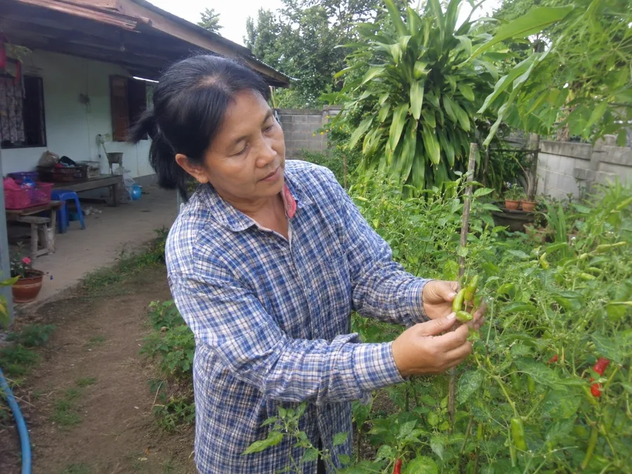
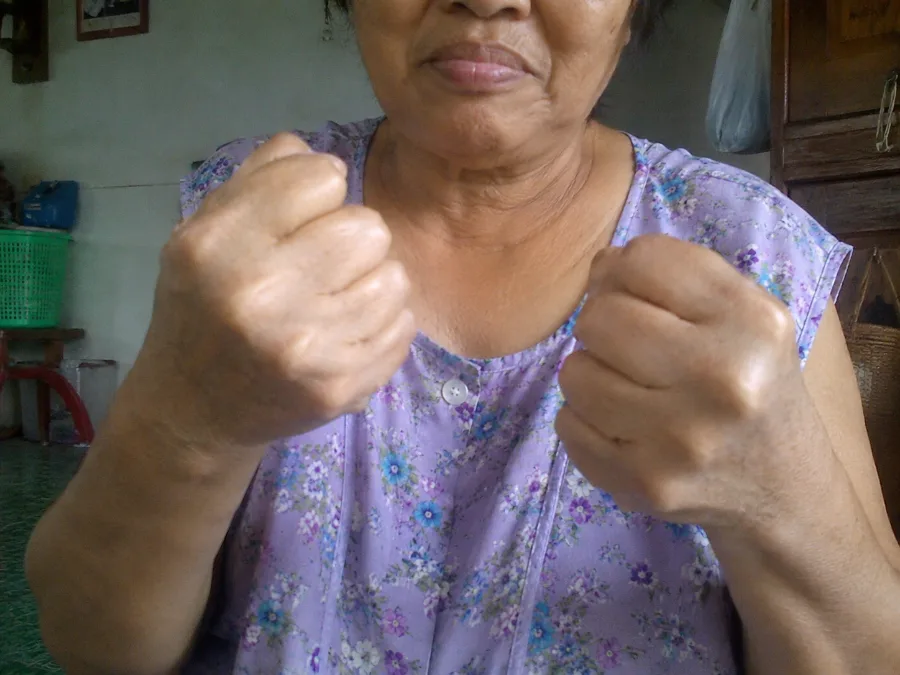
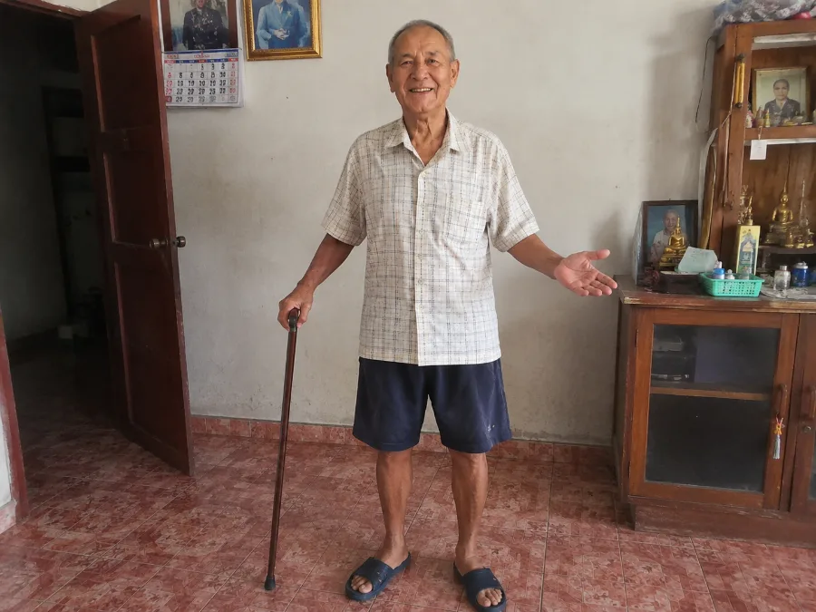
นพ. ธนวัฒน์ ศรีสุข:
— กรณีเหล่านี้คือหลักฐานที่มีชีวิตว่าข้อต่อสามารถฟื้นฟูได้ — แม้ในตอนที่การวินิจฉัยดูเหมือนคำพิพากษา โดยไม่ต้องผ่าตัด โดยไม่ต้องใช้ยาที่ทำลายกระเพาะ และสิ่งที่ทำให้ผมมีความสุขที่สุดคือ คนเหล่านี้ส่วนใหญ่เป็นผู้อาศัยในบ้านพักคนชรา — คนที่โลกลืมไปแล้ว แต่ผมไม่ลืมพวกเขา และ Calcevit ก็ไม่ลืมพวกเขาเช่นกัน
ทำไม Calcevit จึงไม่มีขายในร้านขายยา? และจะหาซื้อได้อย่างไร?
นพ. ธนวัฒน์ ศรีสุข:
น่าเสียดายที่การผลิต Calcevit เป็นกระบวนการที่ซับซ้อนและมีต้นทุนสูง ส่วนผสมหายาก — สารสกัดกรงเล็บปีศาจ กรดบอสเวลลิกเข้มข้น อาร์นิกาภูเขาในความเข้มข้นสูง — และหาได้ยากในปริมาณที่ต้องการ เราจึงไม่สามารถตอบสนองความต้องการทั้งหมดได้
ต้องใช้เวลาอย่างน้อย 2-3 ปีกว่า Calcevit จะวางจำหน่ายในร้านขายยา จนกว่าจะถึงตอนนั้น ผลิตภัณฑ์จะจำหน่ายทางออนไลน์เท่านั้น ภายใต้โครงการสนับสนุน ปีละสองครั้ง อย่างไรก็ตาม ส่วนลดอาจสูงถึง 50% — ซึ่งสำคัญอย่างยิ่งสำหรับผู้สูงอายุ
ผมขอร้อง: อย่าพลาดโครงการสนับสนุนนี้ ไม่ใช่เพื่อตัวคุณเองเท่านั้น — แต่เพื่อพ่อแม่ ปู่ย่าตายาย คนที่คุณรัก ที่อาจกำลังทนทุกข์อยู่เงียบๆ หรือเพื่อคนที่อยู่ในบ้านพักคนชราแล้ว ตามลำพัง และไม่มีใครส่งอะไรไปให้ จงเป็นคนที่สร้างความเปลี่ยนแปลง
กรุณาใช้แบบฟอร์มด้านล่างนี้เพื่อสั่งซื้อ
โอกาสสุดท้ายที่จะได้รับ Calcevit ในปีนี้ — เพื่อตัวคุณเองหรือคนใกล้ชิดที่กำลังทนทุกข์อยู่เงียบๆ
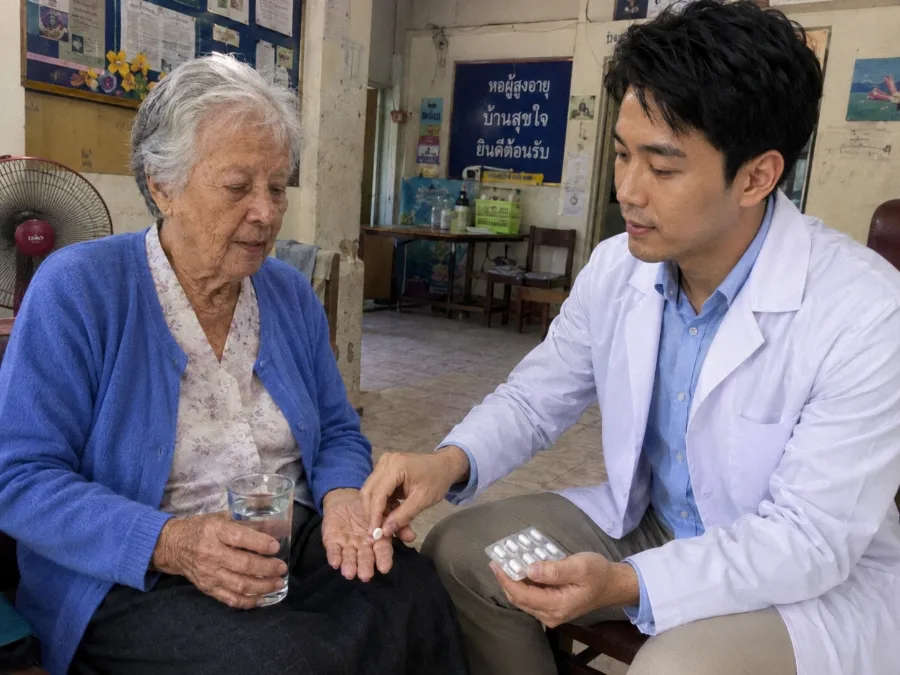
นพ. ธนวัฒน์ ศรีสุข:
— ผมสำรองไว้ 2,000 ชิ้นสำหรับผู้อ่านพอร์ทัลนี้โดยเฉพาะ คนไทยทุกคนที่อายุเกิน 40 ปี สามารถรับส่วนลดสูงถึง 50% แต่โครงการจะสิ้นสุดในวันที่
อย่ารอจนกระทั่งขึ้นบันไดไม่ได้ จนกระทั่งเข่าใช้การไม่ได้โดยสิ้นเชิง จนกระทั่งกระดูกสันหลังยึดติด และที่สำคัญที่สุด — อย่ารอจนกระทั่งกลายเป็น „ภาระ" ในสายตาของครอบครัว Calcevit มีฤทธิ์สะสม และใช้เพียงปีละครั้งเพื่อป้องกันก็เพียงพอแล้ว
กรอกชื่อและเบอร์โทรศัพท์ของคุณ ที่ปรึกษาของเราจะติดต่อกลับ เลือกโครงการที่เหมาะสม และจัดส่งภายใน 2-3 วัน โดยพนักงานส่งของหรือทางไปรษณีย์ ตรงถึงที่อยู่ที่คุณระบุ
ด้วยความหวังและความเคารพ — นพ. ธนวัฒน์ ศรีสุข ดูแลคนที่คุณรักด้วยนะครับ บางทีสิ่งเดียวที่พวกเขาต้องการ คือการรู้ว่าพวกเขายังไม่ถูกลืม
อัปเดต: : เนื่องจากความสนใจที่ล้นหลาม สินค้าอาจหมดเร็วกว่าที่คาด! พรุ่งนี้ — — เป็นวันสุดท้ายของโครงการ หรือจนกว่าสินค้าจะหมด
โปรดทราบ! อย่าปิดและอย่ารีเฟรชหน้านี้ มิฉะนั้น Calcevit ที่สำรองไว้สำหรับคุณจะถูกส่งต่อให้บุคคลอื่น!
ใช้สิทธิ์ข้อเสนอนี้ — ที่นั่งของคุณถูกจองไว้แล้ว: เลขที่ 1 876
ความคิดเห็น
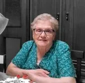
มาลี รุ่งเรือง
ฉันร้องไห้ตอนอ่านบทความนี้ แม่ของฉันอายุ 76 ปี และอยู่บ้านพักคนชรามา 2 ปีแล้ว — เพราะเข่าของท่านใช้การไม่ได้ และเราดูแลท่านไม่ไหว นี่คือบาปที่ใหญ่ที่สุดของฉัน ฉันสั่ง Calcevit ให้ท่านแล้ว บางทีอาจยังไม่สายเกินไป ขอพระเจ้า ฉันหวังว่ามันจะได้ผล
ศิริพร ใจดี
ฉันได้รับ Calcevit เมื่อวันศุกร์ที่แล้ว รับประทานเช้าและเย็น หลังจาก 5 วัน — ความปวดลดลงมาก ฉันลงบันไดได้โดยไม่ต้องเกาะราว! เรื่องราวของคุณหมอทำให้ฉันตัดสินใจสั่งซื้อ เขาเป็นคนที่ยอดเยี่ยมจริงๆ
อรพิน สุขสันต์
ฉันอายุ 69 ปี กระดูกสันหลังทรมานฉันมา 4 ปี — หมอนรองกระดูกเคลื่อนและปวดร้าวลงขา ก้มผูกเชือกรองเท้าไม่ได้ หมอให้ยาแก้อักเสบที่ทำลายกระเพาะของฉัน หลังกิน Calcevit 3 สัปดาห์ — ความปวดหายไปเกือบหมด ฉันเดินไปตลาดเอง ซื้อของ ทำกับข้าวได้ ฉันได้ชีวิตกลับคืนมา
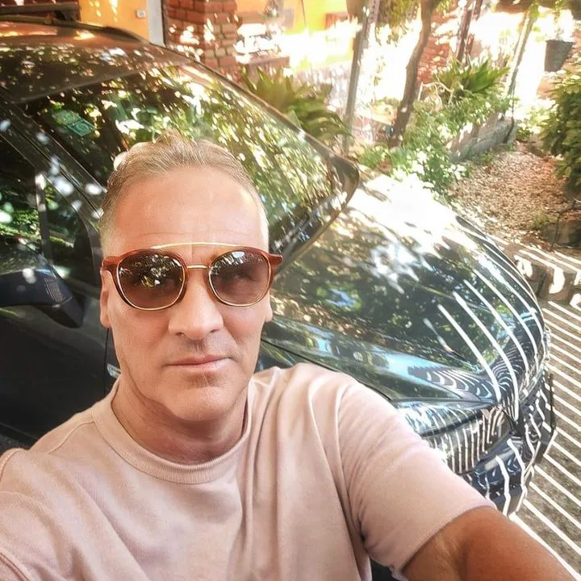
สมชาย พงษ์ไทย
ผมทำงานในออฟฟิศวันละ 10 ชั่วโมง กระดูกสันหลังและคอของผมใช้การไม่ได้ หมอบอกว่า „ไม่ลาออกก็ผ่าตัด" ผมเลือก Calcevit หลังจาก 5 สัปดาห์ — ไม่มีความปวดเลย และผมเคารพ นพ. ธนวัฒน์ อย่างยิ่ง — ในโลกที่ทุกคนต้องการเงิน เขากลับเดินทางไปหาผู้สูงอายุที่ถูกลืม
ประสิทธิ์ ทองดี
ผมสั่ง 3 ชิ้น — สำหรับตัวเอง (เข่า) ภรรยา (มือ ข้ออักเสบ) และพ่อตาที่อยู่บ้านพักคนชรา เราไปเยี่ยมบ่อยไม่ได้ แต่อย่างน้อยก็ส่งสิ่งที่ท่านต้องการไปให้ หวังว่าจะได้ผลกับท่านด้วย ขอบคุณสำหรับบทความนี้
อัจฉรา วงศ์ใหญ่
ฉันกำลังคิดว่าจะสั่งให้พ่อดีไหม ท่านอยู่บ้านพักคนชรามา 3 ปี — เข่าใช้การไม่ได้เลย ท่านหมดอาลัยตายอยาก แทบไม่พูด พวกคุณคิดว่า Calcevit ยังช่วยได้ไหมตอนอายุ 78 ปี?
จุฑามาศ ศรีทอง
อัจฉรา แม่ของฉันอายุ 82 ปี! ข้อเข่าเสื่อมรุนแรงทั้งสองข้าง ลุกจากเตียงไม่ได้ ใช้ Calcevit มา 2 เดือน — ตอนนี้เดินออกไปที่ลานบ้านเองได้ ฉันไม่ได้พูดเกินจริง สิ่งที่งดงามที่สุดคือ ตอนฉันไปเยี่ยม ท่านยืนรอรับฉันที่ประตู เราทั้งคู่ร้องไห้ สั่งเลยอย่าลังเล พ่อของคุณสมควรได้รับโอกาสนี้
สมพงษ์ แก้วมณี
อัจฉรา สั่งได้เลยสบายใจ ผมอายุ 78 ปี เกือบต้องนั่งรถเข็นแล้ว — ข้อสะโพกเสื่อม Calcevit ทำให้ผมกลับมายืนได้ใน 2 เดือน อย่างแท้จริง พ่อของคุณต้องการมันมากกว่าที่คุณคิด
กาญจนา บุญมา
ฉันใช้มา 1 สัปดาห์สำหรับเข่าและเอว ตอนเช้าฉันไม่ „ขาแข็งเป็นท่อนไม้" อีกแล้ว ก้มตัวได้ ลุกขึ้นได้โดยไม่ต้องร้อง „โอ๊ย!" ฉันสั่งให้เพื่อนบ้านด้วย — เธออายุ 73 ปี อยู่คนเดียว และต้องเกาะกำแพงเวลาเดินในบ้าน
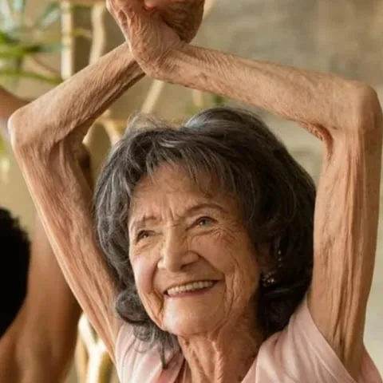
เอื้อมพร ชัยมงคล
ตอนอายุ 68 ปี ฉันคิดว่าจะไม่ได้ทำสวนอีกแล้ว เข่าและกระดูกสันหลังทำให้ฉันขยับไม่ได้ Calcevit เปลี่ยนทุกอย่าง — หลังจาก 4 สัปดาห์ ฉันพรวนแปลงแรกของปีนี้ได้ เรื่องราวของ นพ. ธนวัฒน์ สัมผัสใจฉันอย่างลึกซึ้ง โลกนี้ยังมีคนใจดีอยู่
ทองสุข มีสุข
ผมอายุ 82 ปี ปีที่แล้วผมเข้าห้องน้ำเองไม่ได้ ลูกๆ พูดถึงบ้านพักคนชรา ผมลอง Calcevit — โดยไม่ได้หวังอะไรมาก แล้วมันก็ได้ผล! ผมเดินเอง แต่งตัวเอง เดินออกไปที่ประตูเองได้ ลูกๆ ของผมไม่พูดถึงบ้านพักคนชราอีกแล้ว นี่คือความสุขที่ยิ่งใหญ่ที่สุดของผม
ไพศาล เกษมสุข
ภรรยาผมลงบันไดไม่ได้ เธอเกาะกำแพงและร้องไห้ด้วยความเจ็บปวด ผมกลัวจะเสียเธอไป — ไม่ใช่เพราะโรค แต่เพราะความสิ้นหวัง ผมสั่ง Calcevit แบบมีส่วนลด หลังจาก 4 สัปดาห์ — เมื่อวานเธอเดินไปตลาดเองและกลับบ้านพร้อมดอกไม้ ดอกไม้! ขอบคุณจากใจจริง
ไอลดา พรหมมา
ฉันสั่ง 4 ชิ้น — สำหรับแม่ (บ้านพักคนชรา เข่า) พ่อ (อยู่บ้าน กระดูกสันหลัง) และอีก 2 ชิ้นสำหรับตัวเอง (มือ ข้อนิ้วอักเสบ เขียนหนังสือไม่ได้) เรื่องราวในบทความทำให้ฉันใจสลาย ฉันน่าจะทำตั้งนานแล้ว ฉันไม่มีข้อแก้ตัวอีกต่อไป
สุชาดา คำแก้ว
ฉันได้รับ Calcevit แล้ว — พนักงานส่งของมาส่งภายใน 2 วัน! แม่เริ่มรับประทานแล้วที่บ้านพักคนชรา ฉันภาวนาให้สุดหัวใจ ฉันจะส่งบทความนี้ให้เจ้าหน้าที่ด้วย — เผื่อพวกเขาจะติดต่อ นพ. ธนวัฒน์
กิตติศักดิ์ ภักดี
ผมหา Calcevit ในร้านขายยา — ไม่มี เขาบอกว่าต้องสั่งจากหน้าเว็บนี้ หวังว่าจะยังมีอยู่ ปู่ของผมต้องการด่วน — ท่านอายุ 81 ปีและเดินไม่ได้เลย